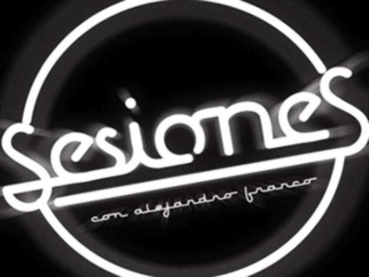

/JACS.
Soy un creativo al que le gusta hacer un poco de todo: publicidad, diseño, código front-end, edición de video y producción de TV.
Me encanta crear historias visuales atractivas y ayudar a marcas o personas a conectar mejor con su audiencia.
Combino diseño y código para hacer webs interactivas y fáciles de usar.
También edito video y entiendo cómo llevar ideas a la pantalla.
Dando Voz a Hoteles NH: Creatividad Publicitaria con Esencia.

Se creó una campaña publicitaria memorable para Hoteles NH, capturando la esencia de su marca y conectando emocionalmente con sus huéspedes a través de un concepto innovador.
Sesiones, un programa reconocido por su propuesta artística y musical
En Sesiones con Alejandro Franco, Formé parte del equipo de producción en videografía, edición de video y gestión digital, contribuyendo directamente a la experiencia visual y al alcance de la audiencia.
Producción y Web para "Picnic"

Contribuí en la producción del programa de televisión "Picnic", realizando la edición de video y gestionando la parte web asociada al show.
Frontend Developer - Secretaría de la Función Pública
Durante una década, me desempeñé como Frontend Developer en la SFP. Mis responsabilidades principales incluyeron la concepción de herramientas de desarrollo internas, la maquetación y programación de interfaces, y asegurar la aplicación correcta de la imagen institucional gubernamental en los sistemas.
Servicios
- Diseño Gráfico
- Desarrollo Web
- UX/UI
- Aplicaciones Móviles
- Video/edición
- Producción
Grupo Telefónica: Conectando Marcas a través de Eventos Estratégicos.
Se diseñó y produjó eventos clave, creando el escenario perfecto para la presentación de sus patrocinios y el fortalecimiento de alianzas estratégicas.

Amadeus: Impulso Creativo y Soporte Total

Su aliado 360°. Integramos publicidad, marketing, producción y soporte tecnológico para potenciar su visión de "technology partner".
Aplicación Móvil Takeda: Catálogo para Ventas
Programé una aplicación móvil para la fuerza de ventas de Takeda. Esta herramienta digital centraliza el catálogo completo de medicamentos, proporcionando a los vendedores acceso instantáneo a detalles como la fórmula, indicaciones terapéuticas y resultados de estudios clínicos, optimizando su labor en campo.
Aplicación Móvil CONDUSEF: Quejas Unificadas

Para la Comisión Nacional para la Protección y Defensa de los Usuarios de Servicios Financieros (CONDUSEF), desarrollé una aplicación móvil que consolida cuatro sistemas de gestión de quejas en una sola plataforma intuitiva. Este proyecto simplifica el proceso para que los usuarios levanten todo tipo de quejas desde su dispositivo móvil.
Diseño Editorial: "La revista Doritos" (Sabritas)
Tuve a mi cargo el diseño de "La revista Doritos", una publicación interna para Sabritas. Esta revista fue un canal esencial de comunicación, informando al personal sobre noticias de la empresa, novedades de producto, comunicados y ofreciendo contenido ameno para su distracción y entretenimiento.
Desarrollo de Plataforma Educativa - Editorial Santillana

Colaboré en el desarrollo de la plataforma de educación primaria de Editorial Santillana. Fui responsable de definir la propuesta de arte y visual, y trabajé en la implementación técnica como parte del equipo de programación frontend